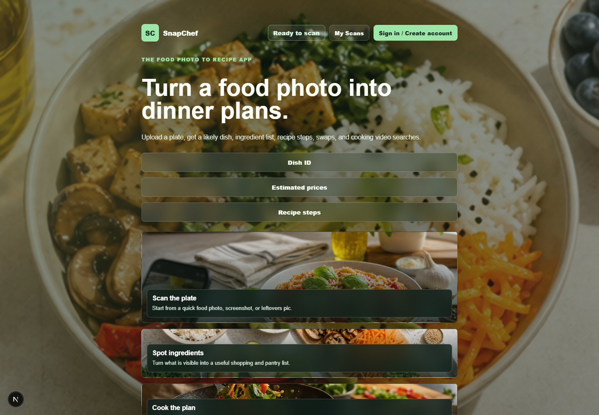
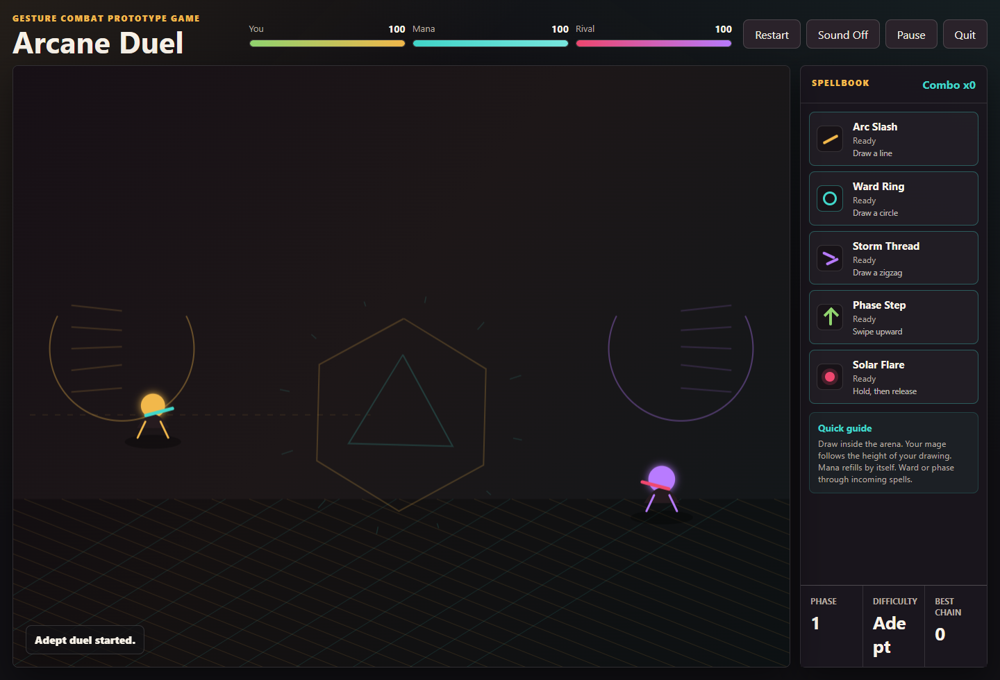
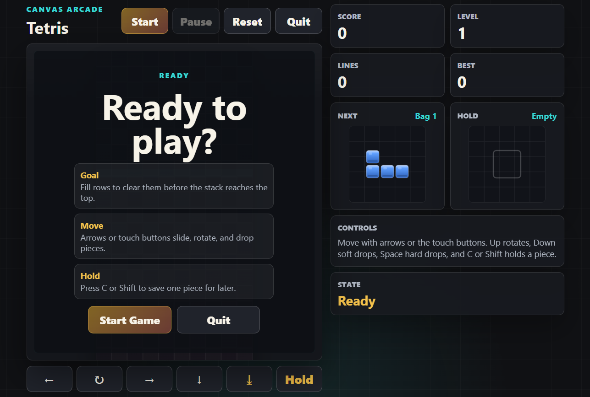

Computer Science Student · Web Developer
Fidel Anyanwu
I’m a web developer and Computer Science student at McNeese State University. I work with React, Python, and SQL.
My projects include a CSV analysis app, a food-photo recipe assistant, and a browser combat game. You can try them below.
McNeese State UniversityGraduating December 2026Full-stack development
Behind the projects
I like building things I can use and improve. A lot of the work happens after the first version: fixing an awkward screen, tracking down a bug, or figuring out why something didn’t save. More about how I work →
Selected work
Featured projects
Try the apps, browse the code, or read about how I built them.
Python + React · Data quality
DataDock
Upload a CSV, find missing values and duplicate rows, and export a cleaned copy. Sign in to keep reports available across devices.
Built with a Python API, PostgreSQL storage, and tests for report ownership.
React · TypeScript · FastAPI · pandas · PostgreSQL

Next.js + AI · Food assistant
SnapChef
Upload a food photo to get recipe ideas, ingredients, substitutions, and estimated nutrition. Adjust your preferences and save recipes to your account.
AI results are estimates. Saved recipes use Supabase accounts and storage.
Next.js · React · TypeScript · Supabase · AI APIs

Next.js · Incident practice
SignalDesk
Work through simulated incidents, update their status, and follow response checklists. A separate view checks public service status.
Progress saves in your browser. Tests cover persistence and failed status requests.
Next.js · React · TypeScript · Public status APIs
More projects
More projects
Study tools, games, and a team bookstore project.

JavaScript · Study planning
Bring course files, notes, deadlines, flashcards, and quizzes into one browser workspace. Panic Mode turns a tight deadline into a timed study plan, with backup export to keep your work portable.

JavaScript · Student hub
A student hub with tutor listings, groups, events, and profile pages. Built with HTML, CSS, JavaScript, and browser storage.

Canvas · Gesture combat
Draw a spell and see it become an action. A canvas combat game where gestures, mana, cooldowns, and difficulty shape each encounter.

Canvas · Puzzle game
Play Tetris with keyboard or touch controls, a hold slot, next-piece previews, and saved best scores.
TEAM PROJECTCowboy
BookstoreReact + Django + PostgreSQL
Team project · Full stack
A React/Django team project. I contributed the cart, wishlist, checkout interface, and order confirmation through a merged pull request.
Earlier projects
My earlier work with page layouts, forms, and JavaScript.
FitNex →Workout logging, weekly goals, and progress saved in the browser.
FortunatoCare →A healthcare interface exploring service pages, appointment forms, and portal navigation.
Experience
Experience at McNeese
I’ve supported programming labs, tested robotics prototypes, and worked as a Resident Assistant. Read more about those roles and my coursework.